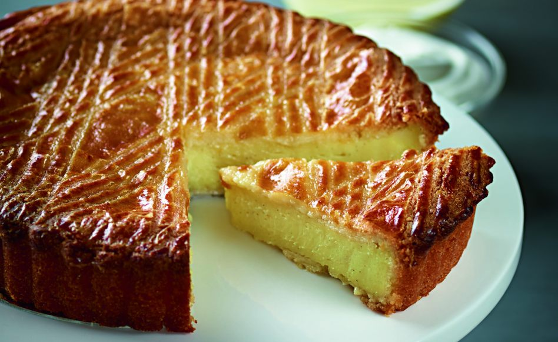

Gateau Basque

Description
A Basque specialty that has pastry cream encased in a light shortdough pastry.
Ingredients
- 1 ⅛ cups milk
- ⅓ cup white sugar
- 2 tablespoons all-purpose flour
- 2 eggs
- 1 teaspoon vanilla extract
- 1 ⅛ cups all-purpose flour
- ½ teaspoon baking powder
- 1 ⅛ cups white sugar
- 3 eggs
- To Make the pastry cream Filling: In a sauce pan, combine the milk and 1/3 cup of sugar. Bring to a boil, stirring to dissolve sugar. Remove from heat. In a small bowl, combine 1/3 cup of sugar and 2 tablespoons flour. Beat in the eggs and vanilla.
- Mix 1/2 cup of hot milk into egg mixture, then pour the egg mixture back into the saucepan with the hot milk. Return to heat and bring to a boil. Continue cooking over medium heat until mixture thickens and becomes smooth. Remove from heat and let cool for 1 hour.
- Preheat oven to 350 degrees F (175 degrees C). Grease and flour a 9 inch springform pan. Combine and sift the flour and baking powder. Set aside
- Cream 1 1/8 cup sugar and 3 eggs until light and fluffy. Fold in the sifted flour mixture in three increments, being careful not to overmix.
- Put half of the dough into the greased pan. Spread the dough so that it covers the bottom of the pan. Place pastry cream to within 3/4 inch of the edge. Add the second half of the cake dough, making sure to enclose all of the filling.
- Bake at 350 degrees F (175 degrees C) for 30 to 40 minutes or until golden brown.
Other recipes